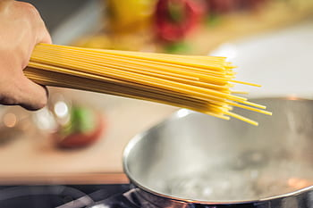

This is easily one of the quickest meal's to make.
With everyday ingredients and a little bit of italian flavour you'll have this meal done in a jiffy.
Directions:
Add spaghetti to a pot and cover with boiling water
Boil for 15 minutes until tender and then strain in a coriander
Heat up some oil in a pan and add the onions
Brown the onions and then add the mince
Brown the mince for about 4 minutes and add your spices
Add the carrots and tomatoes aswell as 1 tin of onion and tomato mix
Make a small gap in the center and add the puree - give it a good stir
Finally add your cook in sauce and let the whole thing simmer on low heat
for another 10 minutes
Serve with grated white cheddar and ENJOY.
Calories
Fat
Sugar
Protein
Fibre
146
5.11g
2.81g
7.12g
1.7g
This is per 100g serving
Ingredients:
1 small onion (chopped)
2 small carrots (grated)
200g white cheddar (grated)
7 cocktail tomatoes(quartered)
1 tin tomato & onion mix
1 packet of spaghetti bolognaise cook-in-sauce
500g mince
300g spaghetti
50g tomato puree
1 tsp salt
2 tsp parsley
2 tsp rosemary
1 tsp garlic
Boil the spaghettiBrown the onionsAdd the mince and spices-let it simmerServe with grated cheese and ENJOY

If you enjoy cooking like we do but don't always know exactly how to make the meals
then you are gonna love this site - We've got more recipes just like this one
where we will show you everything you need from step one to DONE.
You will never again feel left out with these amazing recipe's
Be sure to check out our Facebook page and Youtube channel for more videos